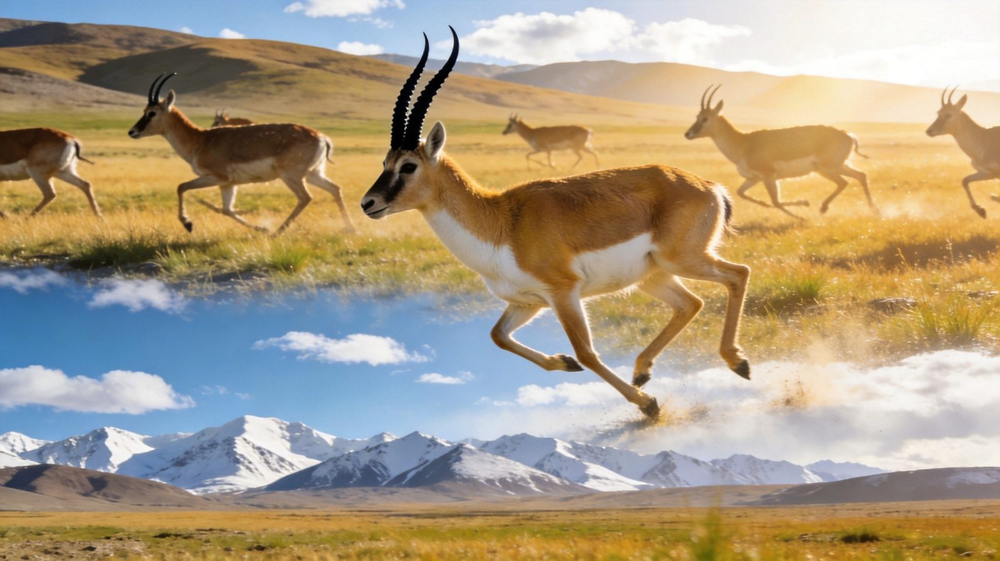
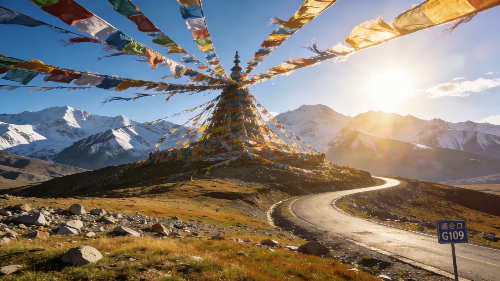
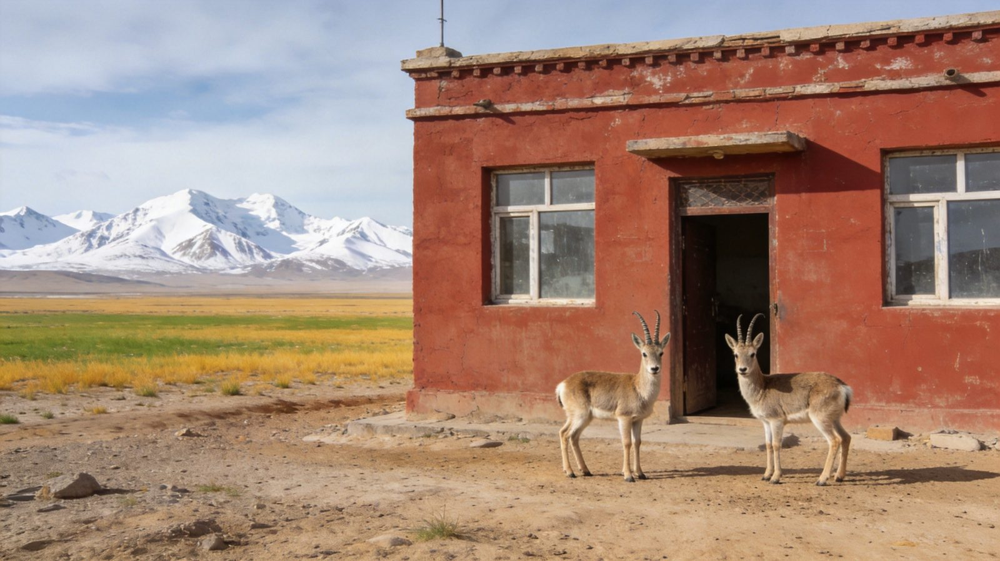

🦌 青海 · HOH XIL & TIBETAN ANTELOPE
可可西里 · 无人区穿越指南
世界自然遗产、地球第三极的核心，青藏线 G109 是最孤独也最辽阔的路。核心看点：藏羚羊群、昆仑山口、索南达杰保护站、玉珠峰、不冻泉、楚玛尔河红河谷。这里不是景区、不收门票，玩的是「敬畏」——自驾或包车沿青藏线穿越，路边就能邂逅高原精灵。求快走 一日精华版，想深入看动物走 两日深度版。适合 1–3 人，含行程 / 住宿 / 补给 / 出行方式对比 / 高反与生态铁律。
📍 目的地：可可西里（青海玉树州）🦌 藏羚羊/藏野驴/野牦牛⏱️ 1 天 / 2 天双方案💰 预算已附 · 非景区免门票
🛣️一日精华 · 格尔木往返
核心策略：格尔木出发沿青藏线 G109 南下，昆仑山口打卡 + 索南达杰保护站致敬 + 藏羚羊观景台蹲守，可可西里最有辨识度的点在一天内拿全，适合时间有限的首刷。
👥 1–3 人适配：可可西里没有景区大巴，自驾或包车/拼车是唯一方式。往返约 500 公里、海拔从 2800 米直上 4600 米，务必防高反、早点返程（天黑前回到格尔木）。预算按 人均 标注。
🗺️ 行程安排
清晨 · 格尔木出发（青藏线 G109）
🚗 格尔木市区出发（加满油）🏔️ 昆仑圣泉·昆仑神泉（接泉适应海拔）
🌅 远眺玉珠峰（海拔 6178 米·日照金山）🧭 经无极龙凤宫·进昆仑山口
💡 格尔木到昆仑山口约 160 公里、车程 3–4 小时；玉珠峰观景台就在 G109 国道旁，停车远眺雪山与荒原同框。沿途补给点少，提前备水与干粮。
中午 · 昆仑山口 + 索南达杰保护站
⭐ 昆仑山口（海拔 4768 米·经幡·烈士纪念碑）🏠 索南达杰保护站（免费·看自然博物馆与救助藏羚羊）
⚠️ 昆仑山口风大气温低，停留不宜过久、勿跑跳；索南达杰保护站海拔约 4479 米，可了解藏羚羊保护史、看被救助的小藏羚羊，肃穆庄重，保持安静尊重。
下午 · 藏羚羊观景台 + 返程
🦌 藏羚羊观景台（索南达杰站周边·5–7 点活跃）🚗 返程格尔木（务必 17:00 前出发）
💡 藏羚羊、藏野驴在保护站附近路边就可能看到；保持安静、不鸣笛、不下车追，用长焦抓拍。G109 大车多、无路灯、沙尘大，天黑前返程最安全。
🏔️两日深度 · 可可西里腹地
在一日精华基础上，在不冻泉过夜、深入可可西里腹地楚玛尔河/五道梁一带，物种更繁盛、看迁徙与觅食机率更高，节奏更松、最适合 6–8 月藏羚羊产仔季。
👥 1–3 人适配：两日行程里程更长、海拔更高，强烈建议包车/拼车并有熟悉路况的司机；不冻泉保护站床位条件简陋但温暖。绝不过夜五道梁、绝不进核心保护区。预算按 人均 标注。
🗺️ 行程安排
DAY 1 · 格尔木 → 昆仑山口 → 不冻泉
🚗 格尔木出发🏔️ 昆仑山口·玉珠峰·索南达杰保护站
💧 不冻泉（四季不冻的冰蓝泉眼）🏨 宿不冻泉保护站/周边（简床）
💡 不冻泉海拔约 4600 米，入住当晚别洗澡、别饮酒、动作放缓；保护站周边光污染为零，晴夜可拍银河与昆仑山同框，是本次高光。
DAY 2 · 可可西里腹地（楚玛尔河 / 五道梁）+ 返程
🦌 清晨深入腹地寻藏羚羊/藏野驴/野牦牛🌅 楚玛尔河红河谷（赤色河道·青藏铁路同框）
🚗 午后返程格尔木
⚠️ 6–8 月藏羚羊产仔/迁徙季、清晨与黄昏最活跃；楚玛尔河、五道梁一带物种繁盛。五道梁海拔 4700 米、空气稀薄，绝不过夜；全程守生态铁律：不追、不喂、不进核心区、垃圾全带走。
⭐特色看点 · 单独详览
把可可西里最有辨识度的 3 个点单独拎出来说清楚——值不值得去、怎么看。

可可西里 · 高原精灵藏羚羊
野生动物
藏羚羊 · 荒原上的生命与自由
可可西里是藏羚羊、藏野驴、藏原羚、野牦牛的家园，也是「美丽少女」蒙语本意的诗意写照。曾因盗猎几近消失，经索南达杰等守护者与保护区努力，藏羚羊数量已恢复到近 30 万只，阳光下奔跑的它们轻盈得不像真实。
👍 必看理由：可可西里的灵魂。青藏线路边就看得到，清晨黄昏最活跃；保持安静、离 100 米以上用长焦，绝不投喂、不鸣笛、不下车追逐——野生动物对人的信任一旦失去，最终会害了它们。
配图：原创生成 · 无版权风险

昆仑山口 · 万山之祖
高山地标
昆仑山口 · 进可可西里的大门
海拔 4768 米，是青海通往西藏的必经地标，也是进入可可西里的「大门」。山口经幡猎猎、雪山连绵，索南达杰烈士纪念碑静静矗立，挂一条经幡，为这片土地上曾拼过命的人。
👍 必去理由：必打卡。山口风大低温，停留 20–30 分钟即可；旁边玉珠峰观景台可远眺海拔 6178 米的昆仑山东段最高峰，天气好时可见「日照金山」。
配图：原创生成 · 无版权风险

索南达杰保护站 · 英雄坐标
人文保育
索南达杰保护站 · 致敬藏羚羊守护者
以「藏羚羊保护之父」杰桑·索南达杰命名——1994 年他倒在盗猎者的枪下、年仅 40 岁，他的牺牲唤起了全世界对藏羚羊保护的关注。保护站 24 小时免费开放，藏有自然博物馆与救助的小藏羚羊。
👍 必去理由：最动人的一站。可看藏羚羊保护纪录片、了解反盗猎史与生态保护；保护站盖的纪念证书值得收藏。现场保持安静、不干扰保护工作，是这里最好的「打卡」。
配图：原创生成 · 无版权风险
🚗怎么去：自驾 vs 包车/拼车
可可西里没有公共交通与景区大巴，只有自驾、包车、拼车三种选择。
可可西里自驾/包车/拼车三种出行方式对比
| 维度 | 🚗 自驾 | 🚙 包车 | 🚌 拼车/小团 |
|---|
| 核心体验 |
沿青藏线 G109 独立穿越，节奏完全自定；但可可西里路况差、大车多、海拔高，对驾驶与车辆要求极高 |
司机熟悉路况与看动物最佳机位，免去长距离山路疲劳，2–3 人可拼车分摊，省心又能深入 |
格尔木当地有一日/两日小团，费用 800–1500 元/人，省心省力，司机兼向导，适合单人 |
|---|
| 适合有高原+长途自驾经验、开硬派越野车者 | 适合不想开山路、想轻松看景的 2–3 人团 | 适合一个人图省心、或不想做行前功课者 |
| ✔ 自由度高、驾驶体验足 | ✔ 免疲劳、可拼车分摊 | ✔ 全程安排、省心 |
| 费用参考 |
租车+油费往返约 800–1500 元/车 | 格尔木包车约 1200 元/天（含司机+油费，可砍价） | 拼车约 300 元/天·人；一日/两日团 800–1500 元/人 |
|---|
| ✔ 2 人自驾人均可摊更低 | ✘ 人少时人均偏高 | ✘ 可能与陌生人拼车、节奏固定 |
| 💡 一句话建议：不熟悉高原长途 → 一定包车/跟团，别硬刚自驾；确有经验且 2–3 人 → 硬派越野自驾。绝不开车下路基（冻土/流沙易陷车，救援费上万元）。 |
|---|
👥 1–3 人怎么选：可可西里不是给新手的第一站，强烈建议包车或有经验司机陪同。格尔木青旅、旅游 App 可组拼车队，人均约 300 元/天，性价比高。
🏨住宿推荐
以格尔木为基地最方便；要深入过夜可选不冻泉保护站简床（条件简陋但温暖）。
经济型格尔木青旅/连锁酒店
约 120–260 元/晚 · 人均 60–130
市中心/火车站附近配套成熟，方便组拼车队、补给与返程，性价比高。
中端舒适格尔木商务/度假酒店
约 300–600 元/晚 · 人均 150–300
靠近东门/旅游集散，含早、停车方便，是自驾/包车首日休整好选择。
体验过夜不冻泉保护站简床
约 150 元/床 · 条件简陋
深入可可西里的过夜选择，供电/供暖有限但温暖，适合想拍星空银河的深度玩家。
🍽️补给与青海风味
可可西里沿途没有餐馆，以格尔木为补给站——去程备足干粮热水，返程在格尔木吃顿扎实的青海味。
⚠️ 进可可西里必带：自热米饭、巧克力、热水、便携氧气瓶（约 30 元/罐）、葡萄糖；全程无商店、无信号，提前下载离线地图、加满油再进山。
💰预算对比（人均）
区间为保守–宽松（不含往返大交通），可可西里非景区、基本免门票，花费主要在交通与住宿。
可可西里一日精华与两日深度方案人均预算对比
| 项目 | 一日精华版 | 两日深度版 |
|---|
| 大交通（往返） | 约 400–900 | 约 400–900 |
|---|
| 住宿 | 格尔木 1 晚 130–300 | 2 晚 300–600 |
|---|
| 餐饮+补给 | 约 80–150 | 约 150–280 |
|---|
| 门票 | 基本免费 | 基本免费 |
|---|
| 交通/租车（人均分摊） | 约 200–400 | 约 350–700 |
|---|
| 合计 · 人均 | 约 400–900 | 约 900–1800 |
|---|
💡 怎么省：拼车比包车省一半以上（人均约 300 元/天）；格尔木青旅可组队分摊；不冻泉简床是相对实惠的过夜方式。旺季与国庆请提前订房订车。
🧭安全与生态铁律
- 高反是最大的坎：海拔从格尔木 2800 米直上 4600 米，红景天提前 1–2 周吃，带便携氧气瓶+葡萄糖；刚到高海拔首日别洗澡、别饮酒、别跑跳，头痛胸闷就吸氧、严重即刻下撤就医。
- 绝不进核心保护区：可可西里保护区实行分区管理，实验区开放观光、核心区严禁进入（违法），深入需提前向保护区管理局办理手续；五道梁尤其不过夜。
- 动物伦理（罚则很重）：不投喂、不鸣笛、不下车追逐，藏羚羊/藏原羚保持 100 米以上、野牦牛与藏马熊 300 米以上；用长焦拍摄，别惊扰它们。
- 路况与安全：青藏线 G109 大车多、沙尘大、「波浪路」暗坑多，建议硬派越野；晚间无路灯视线极差，务必天黑前返程；可可西里没有有效导航地图、便道多，不熟悉就请司机带路。
- 环保不留痕：可可西里生态极度脆弱，一个塑料瓶几百年不降解；所有垃圾（含廁纸）全部带下山，不踩草原、不摘植物、无人机需报备且风大易炸机、别乱飞。